<style>
body { --bg-image: url('../assetscss/pract2.gif'); }
</style>

<main class="contenedor-principal">
    <div class="navigation-links nav-sticky">
        <a href="../SP1/SP1.html"><i class="fa-solid fa-arrow-left"></i> Práctica anterior</a>
        <a href="../index.html"><i class="fa-solid fa-house"></i> Volver al Inicio</a>
        <a href="../SP3/SP3.html">Siguiente práctica <i class="fa-solid fa-arrow-right"></i></a>
    </div>


    <div class="content-section">
        <h2 class="sub">Fase 1. Preparación del almacenamiento</h2>

        <h3>Paso 1. Añadir disco virtual</h3>
        <p>
            Se añade un disco virtual de 20 GB tipo NVMe en VMware para trabajar almacenamiento de forma aislada
            respecto al sistema principal.
        </p>
        <div class="capture-placeholder">
            <a href="img/1.png" target="_blank" rel="noopener noreferrer"></a>
            <a href="img/2.png" target="_blank" rel="noopener noreferrer"></a>
            <a href="img/3.png" target="_blank" rel="noopener noreferrer"></a>
            <a href="img/4.png" target="_blank" rel="noopener noreferrer"></a>
            <a href="img/5.png" target="_blank" rel="noopener noreferrer"></a>
            <a href="img/6.png" target="_blank" rel="noopener noreferrer"></a>
        </div>

        <h3>Paso 2. Inicialización del disco</h3>
        <p>
            Se inicializa el disco en formato GPT, adecuado para sistemas actuales y compatible con Windows 11.
        </p>
        <div class="capture-placeholder">
            <a href="img/7.png" target="_blank" rel="noopener noreferrer"></a>
        </div>

        <h3>Paso 3. Creación de particiones</h3>
        <p>
            Se crean dos particiones: Dades (NTFS, 15 GB) para almacenamiento controlado y Portable (FAT32, 5 GB) para
            compatibilidad externa.
        </p>
        <div class="capture-placeholder">
            <a href="img/8.png" target="_blank" rel="noopener noreferrer"></a>
            <a href="img/9.png" target="_blank" rel="noopener noreferrer"></a>
            <a href="img/10.png" target="_blank" rel="noopener noreferrer"></a>
            <a href="img/11.png" target="_blank" rel="noopener noreferrer"></a>
            <a href="img/12.png" target="_blank" rel="noopener noreferrer"></a>
            <a href="img/13.png" target="_blank" rel="noopener noreferrer"></a>
            <a href="img/14.png" target="_blank" rel="noopener noreferrer"></a>
            <a href="img/15.png" target="_blank" rel="noopener noreferrer"></a>
        </div>

        <h3>Paso 4. Verificación con diskpart</h3>
        <p>
            Se verifica la configuración mediante diskpart, comprobando discos y volúmenes.
        </p>
        <div class="capture-placeholder">
            <a href="img/16.png" target="_blank" rel="noopener noreferrer"></a>
            <a href="img/17.png" target="_blank" rel="noopener noreferrer"></a>
        </div>
    </div>


    <div class="content-section">
        <h2 class="sub">Fase 2. Usuarios, grupos y cuotas</h2>

        <h3>Paso 5. Configuración de cuotas</h3>
        <p>
            Se habilitan cuotas en la unidad Dades (NTFS), estableciendo límite de 300 MB por usuario con advertencia.
        </p>
        <div class="capture-placeholder">
            <a href="img/18.png" target="_blank" rel="noopener noreferrer"></a>
            <a href="img/19.png" target="_blank" rel="noopener noreferrer"></a>
            <a href="img/20.png" target="_blank" rel="noopener noreferrer"></a>
            <a href="img/21.png" target="_blank" rel="noopener noreferrer"></a>
        </div>

        <h3>Paso 6. Creación de usuarios y grupo</h3>
        <p>
            Se crean los usuarios alumne1 y alumne2 y se agrupan en Limitados para control conjunto de permisos.
        </p>
        <div class="capture-placeholder">
            <a href="img/22.png" target="_blank" rel="noopener noreferrer"></a>
            <a href="img/23.png" target="_blank" rel="noopener noreferrer"></a>
            <a href="img/24.png" target="_blank" rel="noopener noreferrer"></a>
        </div>

        <h3>Paso 7. Prueba de cuotas</h3>
        <p>
            Se prueba con alumne1, superando el límite y comprobando el bloqueo de escritura.
        </p>
        <div class="capture-placeholder">
            <a href="img/25.png" target="_blank" rel="noopener noreferrer"></a>
            <a href="img/26.png" target="_blank" rel="noopener noreferrer">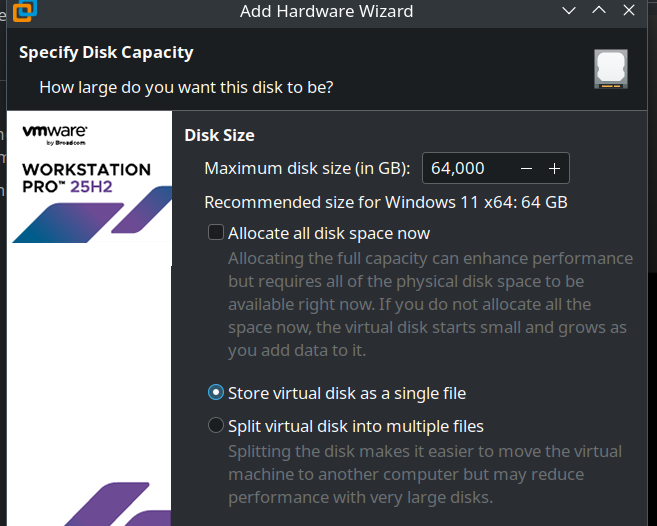</a>
        </div>
    </div>

    <div class="content-section">
        <h2 class="sub">Fase 3. Copias de seguridad</h2>

        <p>
            Se añade un tercer disco, se formatea en NTFS como unidad de backup y se crea la carpeta CopiasUsuaris para
            almacenar perfiles.
        </p>
        <div class="capture-placeholder">
            <a href="img/27.png" target="_blank" rel="noopener noreferrer">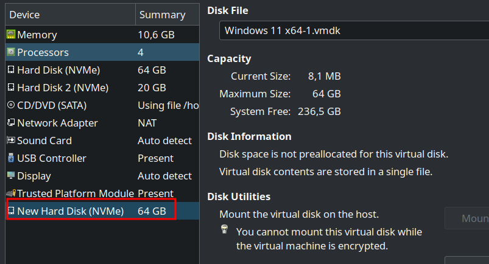</a>
            <a href="img/28.png" target="_blank" rel="noopener noreferrer">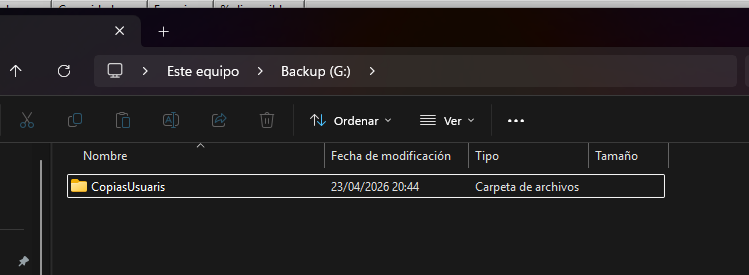</a>
            <a href="img/29.png" target="_blank" rel="noopener noreferrer"></a>
            <a href="img/30.png" target="_blank" rel="noopener noreferrer">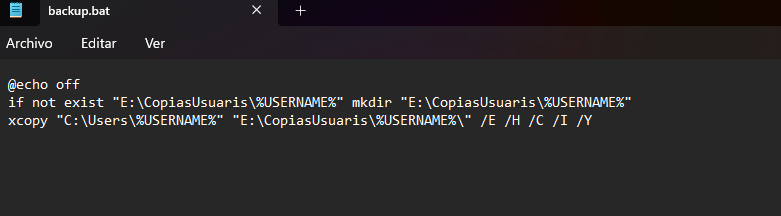</a>
        </div>

        <h3>Script y automatización</h3>
        <p>
            Se crea un script .bat que copia C:\Users\%USERNAME% a E:\CopiasUsuaris y se configura mediante gpedit para
            ejecutarse al inicio de sesión.
        </p>
        <div class="capture-placeholder">
            <a href="img/31.png" target="_blank" rel="noopener noreferrer">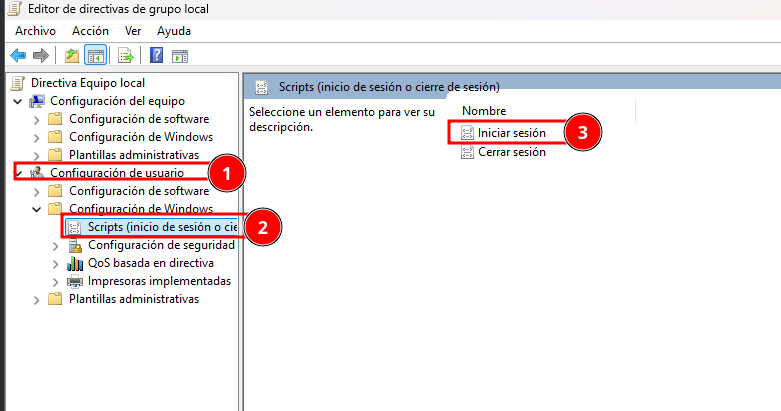</a>
            <a href="img/32.png" target="_blank" rel="noopener noreferrer">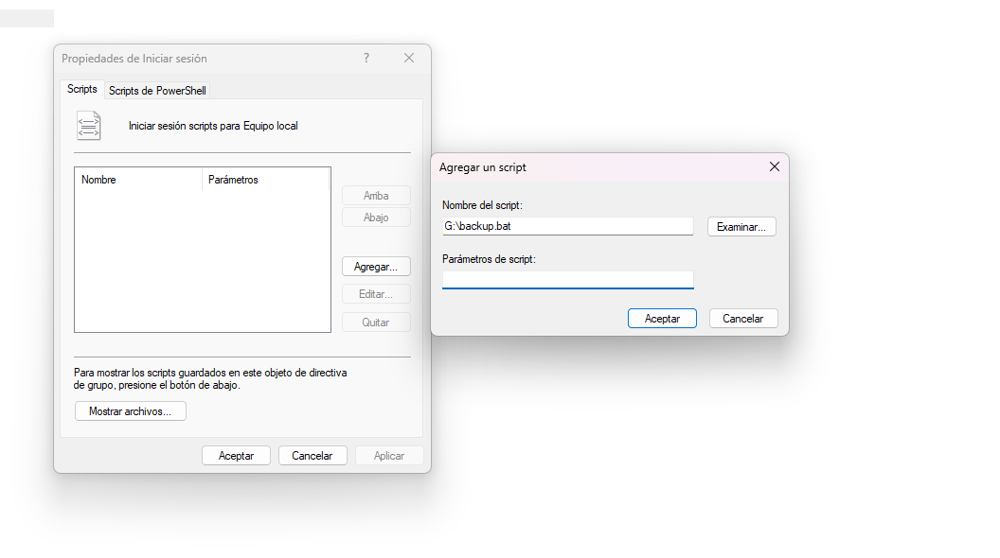</a>
            <a href="img/33.png" target="_blank" rel="noopener noreferrer">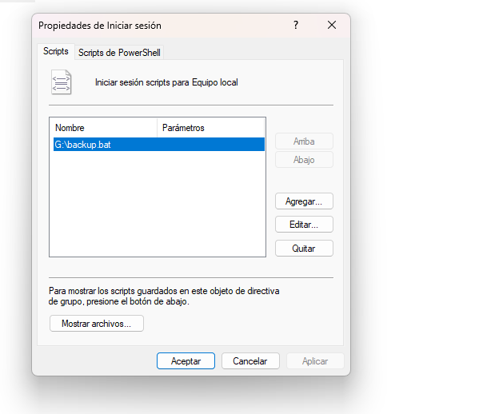</a>
            <a href="img/34.png" target="_blank" rel="noopener noreferrer"></a>
        </div>
    </div>

    <div class="content-section">
        <h2 class="sub">Fase 4. Verificación de copias</h2>

        <p>
            Se inicia sesión con alumne1 y se comprueba que la copia del perfil se genera correctamente en
            CopiasUsuaris.
        </p>
        <div class="capture-placeholder">
            <a href="img/35.png" target="_blank" rel="noopener noreferrer">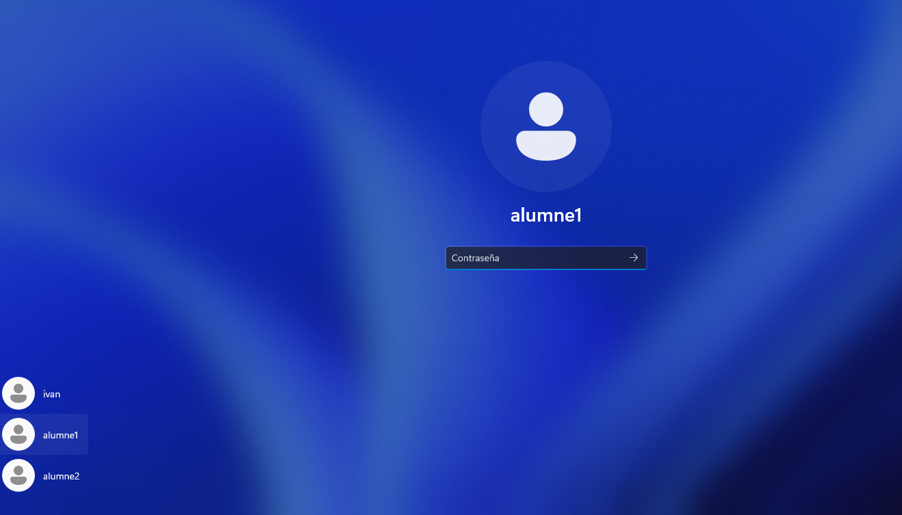</a>
            <a href="img/36.png" target="_blank" rel="noopener noreferrer">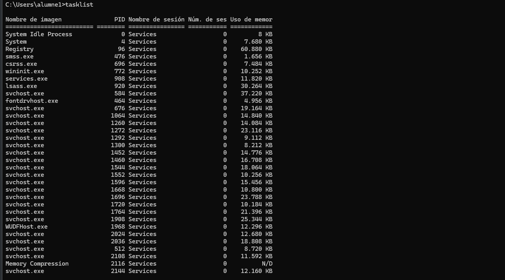</a>
        </div>
    </div>

    <div class="content-section">
        <h2 class="sub">Fase 5. Gestión de procesos</h2>

        <p>
            Se listan procesos con tasklist, se guarda la salida y se identifican procesos prescindibles para optimizar
            el sistema.
        </p>
        <div class="capture-placeholder">
            <a href="img/37.png" target="_blank" rel="noopener noreferrer">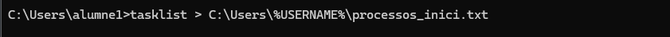</a>
            <a href="img/38.png" target="_blank" rel="noopener noreferrer">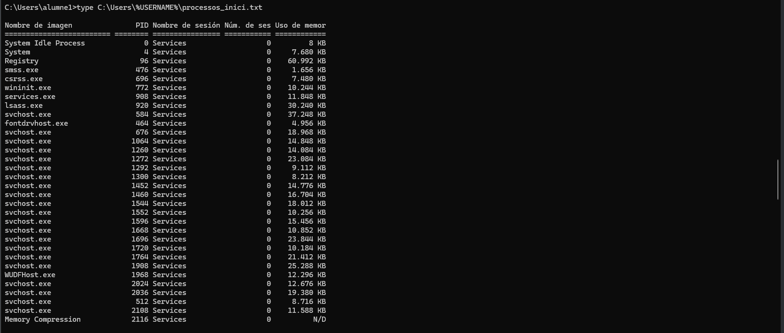</a>
            <a href="img/39.png" target="_blank" rel="noopener noreferrer">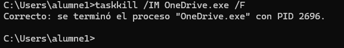</a>
        </div>

        <p>
            Se eliminan procesos como OneDrive o Teams mediante taskkill y se verifica que no se ejecutan en nuevas
            sesiones.
        </p>
        <div class="capture-placeholder">
            <a href="img/40.png" target="_blank" rel="noopener noreferrer">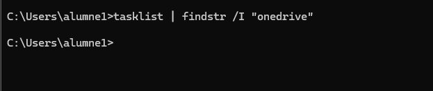</a>
            <a href="img/41.png" target="_blank" rel="noopener noreferrer">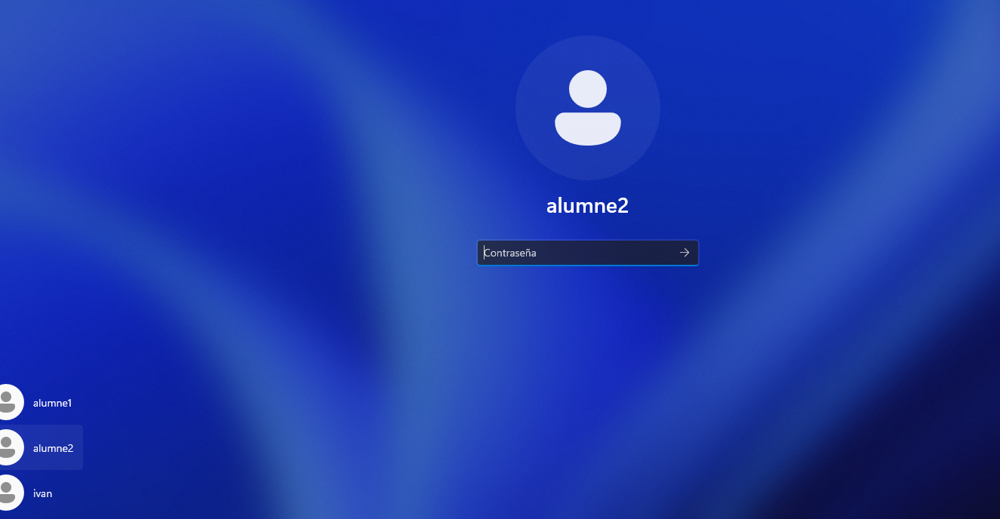</a>
            <a href="img/42.png" target="_blank" rel="noopener noreferrer">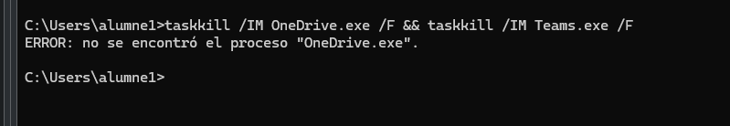</a>
            <a href="img/43.png" target="_blank" rel="noopener noreferrer">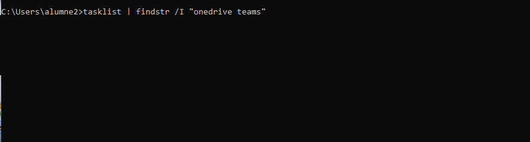</a>
            <a href="img/44.png" target="_blank" rel="noopener noreferrer">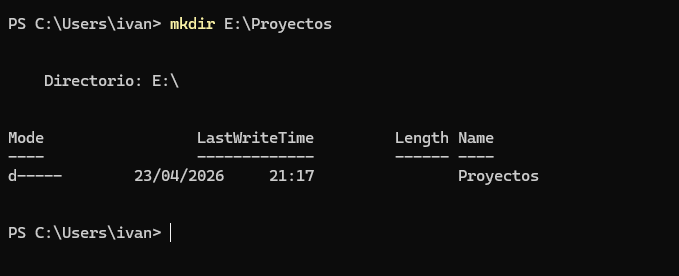</a>
        </div>
    </div>

    <div class="content-section">
        <h2 class="sub">Fase 6. Permisos avanzados y ACLs</h2>

        <p>
            Se crea la carpeta E:\Projectes, se eliminan permisos heredados, se asigna control total al grupo Limitados
            y se limita alumne2 a solo lectura. Se verifica comportamiento con ambos usuarios.
        </p>
        <div class="capture-placeholder">
            <a href="img/45.png" target="_blank" rel="noopener noreferrer">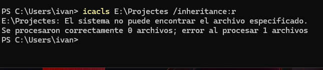</a>
            <a href="img/46.png" target="_blank" rel="noopener noreferrer">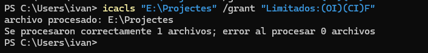</a>
            <a href="img/47.png" target="_blank" rel="noopener noreferrer">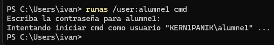</a>
            <a href="img/48.png" target="_blank" rel="noopener noreferrer">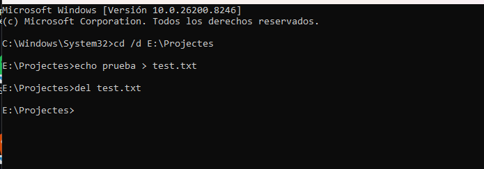</a>
            <a href="img/49.png" target="_blank" rel="noopener noreferrer">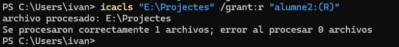</a>
            <a href="img/50.png" target="_blank" rel="noopener noreferrer">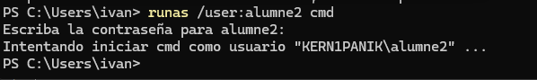</a>
            <a href="img/51.png" target="_blank" rel="noopener noreferrer">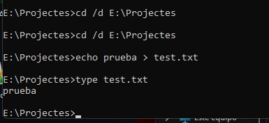</a>
            <a href="img/52.png" target="_blank" rel="noopener noreferrer">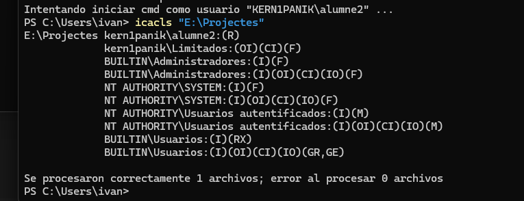</a>
        </div>

        <p>
            Se demuestra el uso de ACLs para aplicar control granular, donde las reglas específicas de usuario
            prevalecen sobre las de grupo.
        </p>
    </div>
    <div class="navigation-links">
        <a href="../SP1/SP1.html"><i class="fa-solid fa-arrow-left"></i> Práctica anterior</a>
        <a href="../index.html"><i class="fa-solid fa-house"></i> Volver al Inicio</a>
        <a href="../SP3/SP3.html">Siguiente práctica <i class="fa-solid fa-arrow-right"></i></a>
    </div>
</main>
